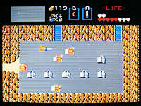

|
■見たこともなかった伝説への扉、全てはここから始まった… |
|
 |
■『ゼルダの伝説』 ファミリーコンピュータディスクシステム用 1986年２月21日発売 2,600円 （のちにファミリーコンピュータ用も発売） ■ディスクシステム用ソフト第１弾、ファミコン初の本格的ロールプレイングゲーム、アクションＲＰＧというジャンルを確立したソフトなどなど、いくつもの肩書きを引っ下げているシリーズ１作目。すべての伝説はここからはじまった、というワケだ。 ■プレイヤーは主人公のリンクとなり、世界に散らばっているトライフォースのかけらを探し出すため、広大な大地を冒険。その地下に広がる迷宮を攻略していく。旅するうちに、武器や道具を見つけてどんどんパワーアップしていき、最終的には９番目の迷宮に住んでいる、大魔王ガノンを倒すのが目的だ。 ■当時は、このゲームではじめてＲＰＧに接するというゲーマーも多く、そのためか謎解きの難しさにギブアップするユーザーが続出。急遽、ヒントを教えるテレホンサービスも開設されるほどだった。 ■また、“裏ゼルダ”という、さらに難しいモードが隠されていたことも話題を呼んだ。 |
| Page-1 | ■ | 1986年『ゼルダの伝説』ディスクシステム、ファミコン用 |
| Page-2 | ■ | 1987年『リンクの冒険』ディスクシステム用 1991年『ゼルダの伝説 神々のトライフォース』スーパーファミコン用 |
| Page-3 | ■ | 1993年『ゼルダの伝説 夢をみる島』ゲームボーイ用 1995年『ゼルダの伝説』サテラビュー用 |